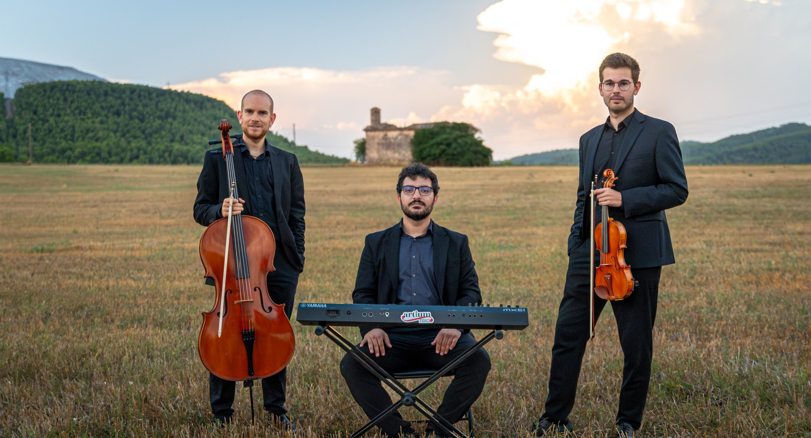
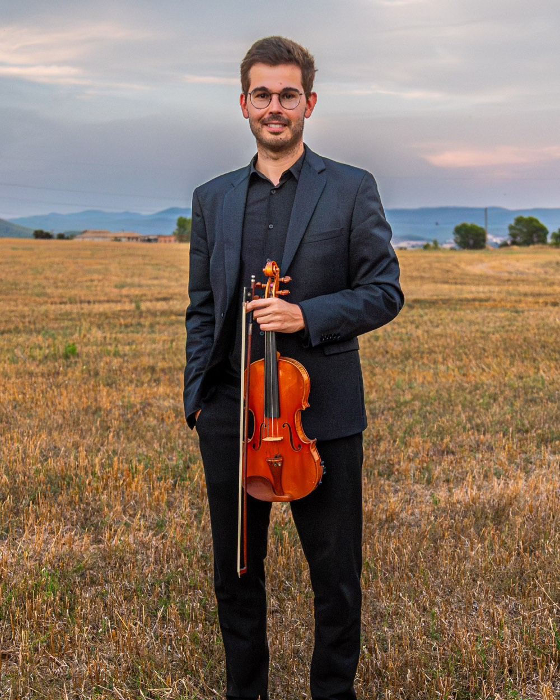
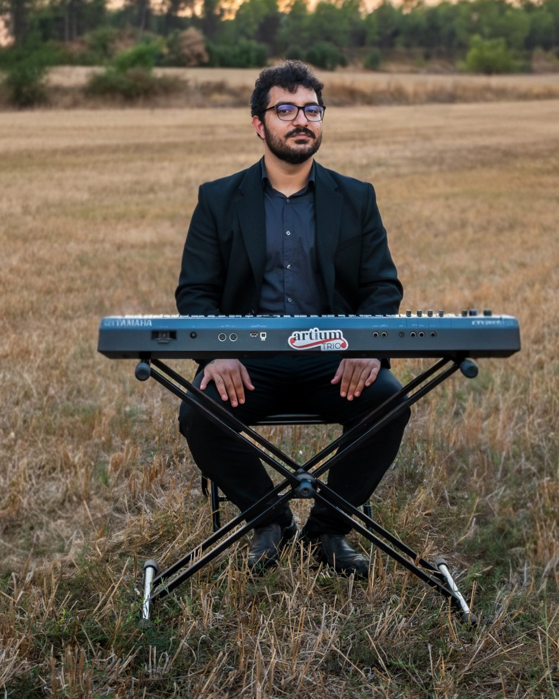
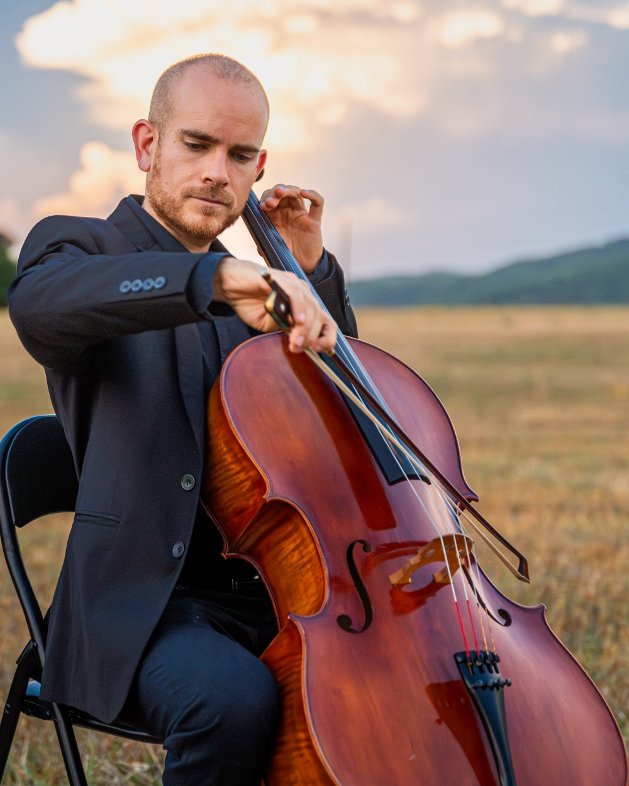
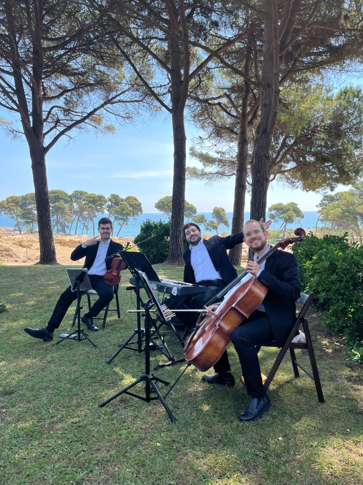

Posem la banda sonora al dia que recordareu per sempre
Trio de violí, violoncel i piano per a esdeveniments
Coneix Artium Trio
Som el Bernat, l'Antoni i el Guillem. Traduïm la vostra història al violí, al violoncel i al piano.

Violí
Melodies que toquen el cor i creen moments màgics en cada interpretació.

Piano
Harmonies perfectes que complementen i eleven cada moment musical.

Violoncel
Profunditat i elegància que aporten calidesa i emotivitat única.

La nostra història junts
Des de fa més de 10 anys, hem perfeccionat el nostre art musical per oferir interpretacions que van des de la música clàssica més elegant fins a les cançons contemporànies més populars.
Cada casament és únic, i per això adaptem el nostre repertori als gustos i preferències de cada parella, creant bandes sonores personalitzades per al seu dia més especial.
Ens han arribat a fer peticions d'allò més variades al llarg dels anys: des d'himnes d'equips de futbol, l'himne de la Champions, fins a adaptacions de cançons escrites per familiars. I fins a dia d'avui no hi ha hagut cap proposta que no haguem pogut dur a terme amb èxit.
Les nostres propostes
Acompanyem cada moment del vostre dia amb música en directe adaptada a la vostra història. Cada proposta es personalitza per a vosaltres.
La Cerimònia
Entre 5 i 8 peces triades amb vosaltres per acompanyar l'entrada, els moments clau i la sortida. Us assessorem a l'hora d'escollir el repertori perquè cada moment tingui la seva banda sonora.
El Welcome
30 minuts de música en directe mentre arriben els convidats. Un preludi elegant que marca el to de tota la celebració des del primer moment.
L'Aperitiu
90 minuts de música durant l'aperitiu, amb un repertori que s'adapta a l'ambient de la celebració — més íntim al principi, més festiu a mesura que avança la trobada.
Combineu els moments que necessiteu
Cada casament és únic. Us ajudem a triar la combinació que millor s'adapta al vostre dia, i us l'adaptem a mida. Escriviu-nos per parlar del vostre projecte i us enviem el dossier complet amb totes les propostes.
El que diuen les nostres parelles
Cada casament és únic i especial. Aquestes són les paraules d'algunes de les parelles que han confiat en nosaltres per fer del seu dia alguna cosa inoblidable.
"Artium Trio va fer que el nostre casament fos absolutament màgic. La música durant la cerimònia ens va emocionar fins a les llàgrimes, i durant el còctel van crear l'ambient perfecte. Tots els nostres convidats van quedar encantats!"
"Professionals increïbles. Van adaptar totes les nostres cançons favorites i el resultat va ser espectacular. La versió de 'Marry Me' de Bruno Mars amb violí, violoncel i piano va ser el moment més emotiu de la cerimònia."
"Des del primer contacte fins al darrer acord, tot va ser perfecte. La seva música va acompanyar cada moment important del nostre dia. Sense dubte, una de les millors decisions que vam prendre per al nostre casament."
"Buscàvem alguna cosa especial i diferent per al nostre casament a la platja. Artium Trio va superar totes les nostres expectatives. La combinació d'instruments va ser perfecta per a l'entorn i va crear una atmosfera única."
"Van acceptar tocar una cançó que havia compost el meu pare per a nosaltres i la van adaptar d'una manera preciosa. Vam plorar tots! La professionalitat i la sensibilitat d'Artium Trio són incomparables."
"La comunicació amb ells va ser excel·lent des del primer moment. Van entendre perfectament el que volíem i el dia del casament tot va sortir immillorable. Els nostres convidats encara ens en parlen!"
Escolta'ns en acció
Descobreix com els nostres instruments donen vida als moments més especials. Aquests vídeos mostren la nostra experiència real en casaments i esdeveniments.


T'agrada el que veus?
Aquests són només alguns exemples del nostre treball. Cada casament és únic i adaptem el nostre estil a les vostres preferències musicals per crear la banda sonora perfecta del vostre dia especial.
Preguntes freqüents
Quant temps abans hem de reservar?
La majoria de parelles ens reserven entre 8 i 14 mesos abans de la data. Els mesos de maig, juny, setembre i octubre tenen molta demanda; recomanem contactar-nos tan aviat com tingueu la data confirmada.
Toqueu fora de Catalunya?
Sí, viatgem per tota Catalunya sense suplement. Per a bodes a les Balears o fora de Catalunya, ens ho poden consultar i preparem un pressupost personalitzat.
Podem triar les cançons que vulguem?
Sí. Tenim un repertori de més de 70 arranjaments propis, i totes les propostes inclouen 2 arranjaments fora de repertori sense cost extra. Si teniu una cançó especial — un tema del vostre grup preferit, una cançó dedicada, un himne familiar — la podem preparar en directe.
Porteu equip de so?
Sí. Totes les propostes inclouen equip de so professional adaptat a l'espai on toquem. No cal que us preocupeu de res tècnic.
Com vestiu el dia del casament?
Formalment, sempre. El nostre vestuari s'adapta a l'estètica de la vostra boda — habitualment amb americana i camisa. Si teniu un codi de vestuari específic, ens ho comenteu i ens hi adaptem.
Fem primer una prova/audició?
Al nostre canal de YouTube i a Instagram teniu més de 30 vídeos de bodes reals. Habitualment amb això les parelles ja tenen prou informació per decidir, però si voleu, ens podem trobar per parlar del vostre projecte sense compromís.
Parlem del vostre dia?
Expliqueu-nos la vostra història i com podem fer que la vostra música sigui tan especial com vosaltres. Estarem encantats de crear la banda sonora perfecta per al vostre dia.
Llegeix els testimonisPoseu-vos en contacte
Què inclou el nostre servei?
- Consulta personalitzada gratuïta
- Repertori adaptat als vostres gustos
- Equipament professional inclòs
- Flexibilitat en horaris i ubicació
Parlem del vostre dia?
Feu clic al botó de sota per enviar-nos els detalls del vostre casament. Us respondrem el més aviat possible i us enviarem el dossier complet amb totes les propostes.
Escriu-nos sense compromísO truqueu-nos directament al +34 630 648 213